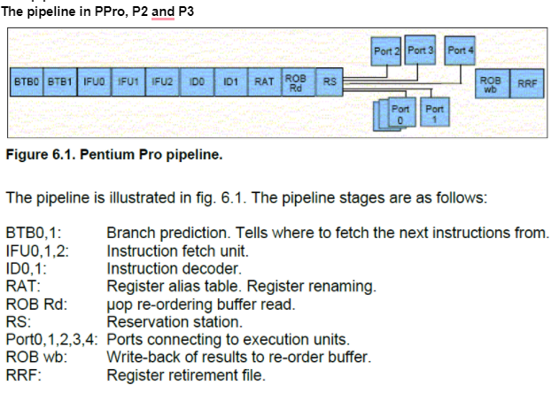
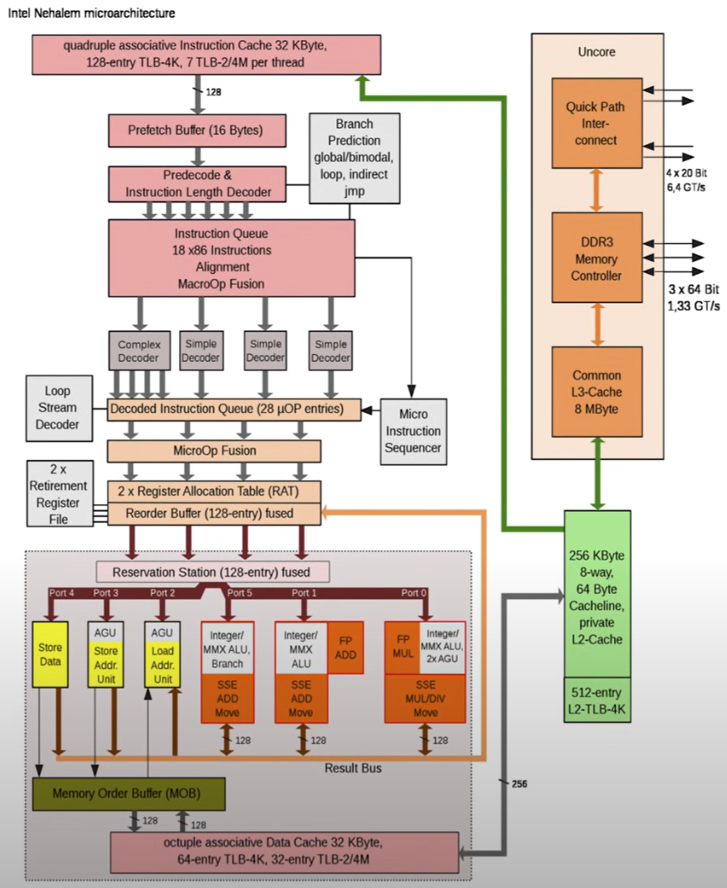

➤
CPU pipeline
The pipeline in PPro, P2 and P3

The main stages in the pipeline are:
- branch prediction,
- instruction fetch (IF),
- instruction decoding (ID),
- register renaming,
- reorder buffer read,
- reservation station,
- execution ports,
- reorder buffer write-back (WB),
- retirement.

CPU Front-End
The CPU Front-End consists of a number of data structures that serve the main goal to efficiently fetch and decode
instructions from memory. Its main purpose is to feed prepared instructions to the CPU Back-End, which is responsible for the actual execution of instructions.
- fetches 16 bytes per cycle of x86 instructions from the L1 I-cache.
- The pre-decode and decode stages of the pipeline convert these complex x86 instructions into macro-ops
- pre-decode stage determines and marks the boundaries of the variable instructions by inspecting the instruction.
- In x86, the instruction length can range from 1-byte to 15-bytes instructions
- This stage also identifies branch instructions.
- This stage moves up to 6 uops to the instruction queue
- The instruction queue also supports a macro-op fusion unit that detects that two uops can be fused into a single instruction to save bandwidth in the pipeline
- Up to five pre-decoded instructions are sent from the instruction queue to the decoder every cycle.
- uop cache (aka, Decoded Stream Buffer (DSB)) is a major performance boost feature
- cache the macro-ops conversion in a separate structure (DSB) that works in parallel with the L1 I-cache.
- During instruction fetch, the DSB is also checked to see if the macro-ops translations are already available in the DSB to avoid repeating the expensive pre-decode and decode operations for the 16 bytes bundle.
- Microcode Sequencer (MSROM):
- Some very complicated instructions decoding: such instructions include HW operation support for string manipulation, encryption, synchronization, and others.
- handle exceptional situations like branch misprediction (which requires pipeline flush)
- floating-point assist (e.g., when an instruction operates with denormal floating-point value)
- Instruction Decoded Queue (IDQ)
- provides the interface between the in-order front-end and the out-of-order backend.
- IDQ queues up the UOPs in order. The IDQ has a total of 128 UOPs
CPU Back-End
The CPU Back-End employs an Out-Of-Order engine that executes instructions and stores results.
- ReOrder buffer (ROB), 224 entry(skylake)
- maps the architecture-visible registers to the physical registers used in the scheduler/reservation station unit.
- provides register renaming and tracks speculative execution.
- ROB entries are always retired in program order.
- Reservation Station/Scheduler (RS)
- tracks the availability of all resources for a given UOP and dispatches the UOP to the assigned port once it is ready.
- The core is 8-way superscalar. Thus the RS can dispatch up to 8 UOPs per cycle.
Execution ports:
- Ports 0/1/5/6 provide all the integer, FP, and vector ALU. UOPs dispatched to those ports do not require memory operations.
- Port 0/1 - Simple move, arithmetic and logic operations can go to either port 0 or 1, whichever is vacant first.
- Port 0 also handles multiplication, division, integer shifts and rotates, and floating point operations.
- Port 1 also handles jumps and some MMX and XMM operations.
- Port 2 handles all reads from memory and a few string and XMM operations,
- port 3 store address unit (calculates addresses for memory write)
- port 4 executes all memory write operations.
- Port 7 is used for address generation.
Memory write operations require two μops, one for port 3 and one for port 4
Memory read operations use only one μop (port 2).
The pipeline in PM
The PM builds on the same basic microarchitecture as PPro, P2 and P3, while the
P4/NetBurst design has been discontinued.
CPU execution optimization
(Agner manual - chapter 9 Optimizing for speed)
CPU execution
To maximize ILP (Instruction Level Parallelism):
- Superscalar: Most modern CPUs are superscalar i.e., they can issue more than one instruction in a given cycle. Issue-width is the maximum number of instructions that can be issued during the same cycle. Typical issue-width of current generation CPUs ranges from 2-6.
- Mulitple execution unit
- deep pipeline
- out-of-order execution
- speculative execution
Order of order execution
CPU has the ability to detect whether an instruction depends on the output of a previous instruction.
OOO execution CPUs must still give the same result as if all instructions were executed in the program order, ie., CPUs must retire all instructions in the program order, i.e., the instructions complete the WB stage in the program order. An instruction is called retired when it is finally executed, and its results are correct and visible in the architectural state.
Pipeline hazards
Pipeline hazards prevent the ideal pipeline behavior resulting in stalls. The three classes of hazards are structural hazards (resource conflicts), data hazards (described below), and control hazards (caused by branches and other instructions that change the program flow).
- Read-after-write (RAW) hazard requires dependent read to execute after write. CPUs implement data forwarding from a later stage of the pipeline to an earlier stage (called “bypassing”) to mitigate the penalty associated with the RAW hazard.
- Write-after-read (WAR) hazard requires dependent write to execute after read. WAR hazard is not a true dependency and can be eliminated by register renaming
R1 = R0 ADD 1
R0 = R2 ADD 2 # rename all the occurrences of R0 register starting from the write operation and below (to eliminate WAR)
- Write-after-write (WAW) hazard requires dependent write to execute after write. WAW hazards are also eliminated by register renaming
Register rename
- The use of different physical registers for the same logical register enables the CPU to make the last three instructions in example 9.1b independent of the first three instructions.
- This is what the CPU does for us. The CPU, when translating instructions to micro-operations (micro-ops) which the Out-of-order algorithm will execute, renames the registers internally to eliminate these dependencies, so the micro-ops deal with renamed, internal registers, rather than with the logical ones as we know them.
- you can generally assume that the number of physical registers is sufficient for quite a lot of instruction reordering
- All general purpose registers, stack pointer, flags, floating point registers, vector registers, and possibly segment registers can be renamed. Many processors do not allow the control words, and the floating point status word to be renamed, and this is the reason why code that modifies these registers is slow.
Partial register
- Some CPUs from both Intel, AMD and VIA are unable to rename a partial register.
- The problems are avoided by replacing mov ax,[mem3] with movzx eax,[mem3]. This resets the high bits of eax and breaks the dependence on any previous value of eax.
- In 64-bit mode, it is sufficient to write to the 32-bit register because this always resets the upper part of a 64-bit register. Thus, movzx eax,[mem3] and mov rax,[mem3] are doing exactly the same thing.
- The INC and DEC instructions are inefficient on some CPUs because they write to only part of the flags register (excluding the carry flag). Use ADD or SUB instead to avoid false dependencies or inefficient splitting of the flags register, especially if they are followed by an instruction that reads the flags.
Micro-operations - uops
The CPU are translating all instructions into microoperations - abbreviated μops or uops
- The advantage of this is that the μops can be executed out of order.
- Eg.
ADD EAX,[MEM2] instruction is split into two μops. The advantage of this is that
the microprocessor can fetch the value of [MEM2] at the same time as it is doing other things
- The splitting into μops also makes the stack work more efficiently
- Eg.
push eax; call func
- The
PUSH EAX instruction may be split into two μops which can be represented as SUB ESP,4 and MOV [ESP],EAX.
SUB ESP,4 μop can be executed even if the value of EAX is not ready yet.- The
CALL operation needs the new value of ESP, so the CALL don’t have to wait for the value of EAX
- Thanks to the use of μops, the value of the stack pointer almost never causes delays in normal programs.
macro-op fusion
On the opposite, Uops can also be fused. There are two types of fusion:
- Microfusion - fuse uops from the same machine instruction. Microfusion can only be applied to two types of combinations: memory write operations and read-modify operations.
# Read the memory location [ESI] and add it to EAX
# Two uops are fused into one at the decoding step.
add eax, [esi]
- Macrofusion - fuse uops from different machine instructions. The decoders can fuse arithmetic or logic
instruction with a subsequent conditional jump instruction into a single compute-and-branch μop in certain
cases. For example:
# Two uops from DEC and JNZ instructions are fused into one
.loop:
dec rdi
jnz .loop
uops fusion saves bandwidth in all stages of the pipeline from decoding to retirement.
- share a single entry in the reorder buffer (ROB).
- This single ROB entry represents two operations that have to be done by two different execution unites (The fused ROB entry is dispatched to two different execution ports)
- retired as a single unit
Instruction fetch
- Many processors cannot fetch more than 16 bytes of instruction code per clock cycle. It may be necessary to make instructions as short as possible if this limit turns out to be critical.
- One way to make it shorter is to replace memory operands by pointers. The address of memory operands can possibly be loaded into pointer registers
- Instruction fetching is delayed by jumps on most processors.
- Branches that are not taken and correctly predicted do not delay instruction fetching.
- It is therefore advantageous to organize the commonly taken branch to be the one where the conditional jump is not taken.
- Most processors fetch instructions in aligned 16-byte or 32-byte blocks.
- It can be advantageous to align critical loop entries and subroutine entries by 16.
- Instruction decoding is often a bottleneck.
- Instructions with multiple prefixes can slow down decoding.
- Avoid address size prefixes.
- Avoid operand size prefixes on instructions with an immediate operand. For example, it is preferred to replace MOV AX,2 by MOV EAX,2.
- Some CPUs have a μop cache or a tiny loopback buffer that helps remove the bottleneck of instruction decoding in small loops.
- Keep loops small so that they are likely to fit into the μop cache or loopback buffer.
- Avoid unnecessary loop unrolling.
Speculative execution
- Modern CPU contains many stages, instruction fetch, decoding, register allocation and renaming, μop reordering, execution, and retirement. The biggest problem with pipelining is branches in the code.
- Speculative execution means that the instructions are decoded and executed, but the results are not retired into the permanent register file, and memory writes are pending (held in reorder buffer (ROB) or called CPU write buffer) until the branch instruction is finally resolved.
- In case of branch misprediction, the pipeline is flushed, the results of the speculative execution are discarded and the other branch is fed into the pipeline. The number of wasted clock cycles is approximately equal to the length of the pipeline.
Speculative execution can execute invalid instruction that normally could result in crash, e.g., the processor really does dereference a NULL pointer (like in below code) or read the non-existing vector element v[i+1] (towards the end of loop) during the speculative execution, then pretends that it never happened. The catastrophic response to such a potential disaster must be held pending, neither discarded nor allowed to become a reality until the branch condition is actually evaluated. One particular case is memory writes must be held until branch evaluation (this is done via CPU write buffer).
int f(int* p) {
if (p) {
return *p;
} else {
return 0;
}
}
Speculative execution, together with caching effect, this is the source of spectre attack
Branch predication
The prediction has two aspects:
- predicting whether a conditional jump will be taken or not
- predicting the target address that a conditional or unconditional jump goes to.
A cache called Branch Target Buffer (BTB) stores the target address of all jumps.
With perf stat, you can see the branch-misses stats, even 1% is pretty bad in practice.
Optimize jump and call
- It is good to place more frequent taken branch first (right after conditional jump)
- Tail calls: It is possible to replace a call followed by a return by a jump
- It is often possible to eliminate an unconditional jump by copying the code that it jumps to.
- Replacing conditional jumps with conditional moves, unless
We can say that a conditional jump is faster than a conditional move if the code is part of a dependency chain and the prediction rate is better than 75%.
- A conditional jump is also preferred if we can avoid a lengthy calculation of d or e when the other operand is chosen.
- Loop-carried dependency chains are particularly sensitive to the disadvantages of conditional moves. because the dependency chain is broken every time a correct branch prediction is made.
- Replacing conditional jumps with conditional set instructions, if a conditional jump is used for setting a Boolean variable to 0 or 1